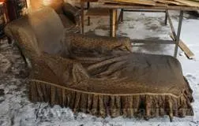
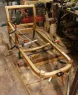
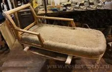
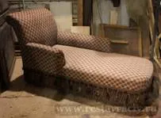

Цены
Что входит в стоимость реставрации?
Состав заказа разбираем по операциям. Покрытие, работа столяра, фурнитура, доставка и установка зависят от предмета. Их можно обсудить по фотографии, а зафиксировать после осмотра.


В материале мастерской
Фотографии и детали



Открыть снимок у мастерской


Открыть снимок у мастерской


Открыть снимок у мастерской
Есть похожая вещь?
Подберите ракурсы для предварительной оценки.